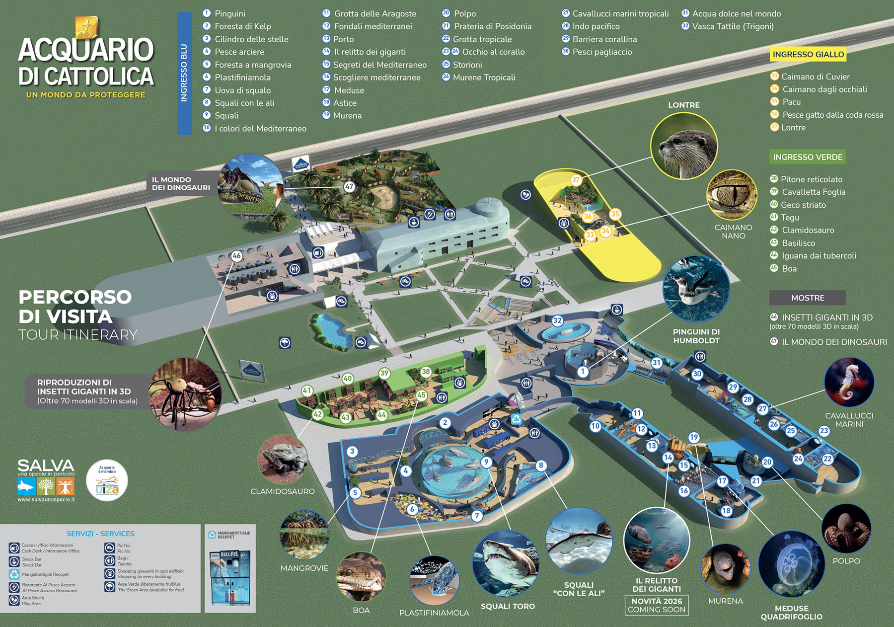

🎒
0
⚙️
Menu
Zaino
Stamina
100
Una giornata
all'Acquario
Guida (non ufficiale) al visitatore medio
Riprendi
Entra
Impostazioni
·
Collezione
·
Crediti
by Giovanni Galassi
Chiudi
Cosa c'è di nuovo
Ho capito
...tranne Manuel.
Clicca per saltare
Chiudi ✕
FINE
Riepilogo della giornata
Ricomincia da capo
Torna al titolo
✕
✖
Opzioni & Progressi
Mappa
Timbri Opzionali
Personaggi
Finali
Trofei
Impostazioni
Torna al Titolo

Immagine mappa non trovata. Controlla la cartella img.
'">
✨
Novità di questa versione
Ripristina impostazioni
Le preferenze restano salvate su questo browser.
ESC o un click fuori dal riquadro chiudono il menu.